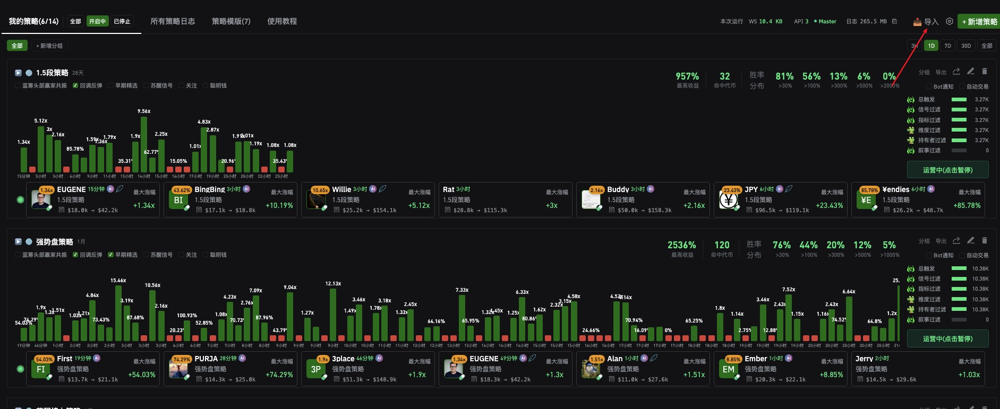
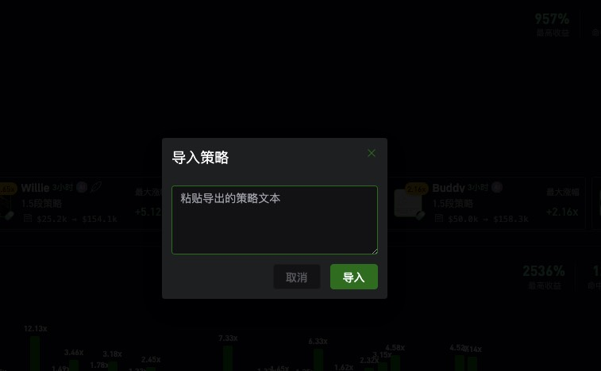
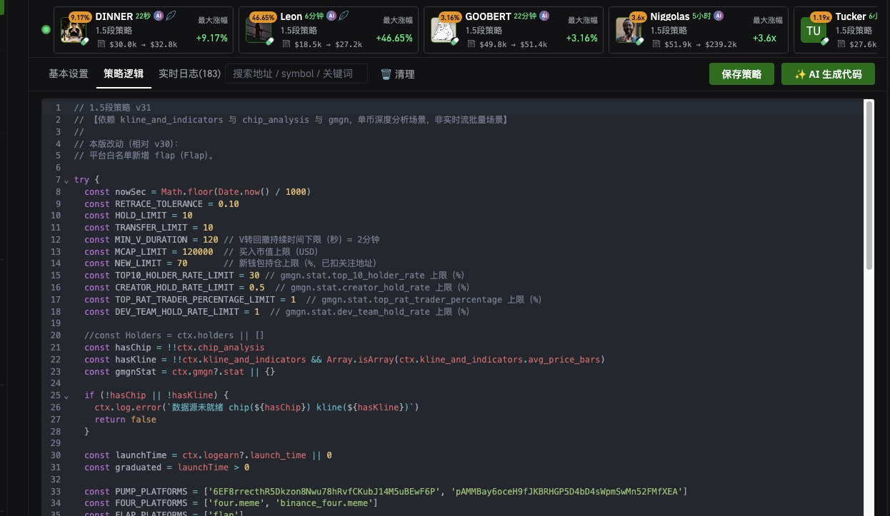

Importing Official Strategies
No need to configure every parameter by hand. The official team exported the three main strategies as text — paste it in and it just works.
Get the Strategy Text
Go to github.com/logearn/logearn-ai-strategies, open import.txt, and copy the whole content.
Click "Import" in the Top-Right
On the "My Strategies" page, at the far right of the top bar, next to + 新增策略 (+ New Strategy).
Paste, Then Click "Import"
The popup has just one input box, with a placeholder that reads "Paste exported strategy text." Paste it in, click the green 导入 (Import) button, and the strategy appears in the list — all parameters come across at once, no manual setup needed.

The 导入 (Import) button at the right of the top bar, where the red arrow points.

One input box plus two buttons — nothing else.

Go to github.com/logearn/logearn-ai-strategies, open code.js, and copy the whole content into "Strategy Logic."
导出 (Export) button in its top-right corner; clicking it generates a block of text — that's exactly what you paste here. So besides the official strategies, this is also how people share strategies with each other in the community.
What Else Is in the Top Bar
| Location | What It Is |
|---|---|
| My Strategies (6/14) | The parentheses show "active / total built." Next to it are three status filter buttons: 全部 (All), 开启中 (Active), and 已停止 (Stopped). |
| All Strategy Logs | A combined trigger log for all strategies. |
| Strategy Templates (7) | 7 ready-made templates provided by the official team. This is a separate path from Import — templates are applied directly in-app, while importing means pasting text. |
| Tutorial | Link to the official documentation. |
| 3H / 1D / 7D / 30D / All | The time range in the top right. Switching it changes the bar chart and win-rate distribution for every strategy below — the same strategy's numbers can look completely different between 1D and 30D, so make sure the tiers match before comparing. |
| + New Group | For grouping once you have many strategies. Only one group, 全部 (All), exists by default. |
| + New Strategy | Build one from scratch — the walkthrough is in the next section. |